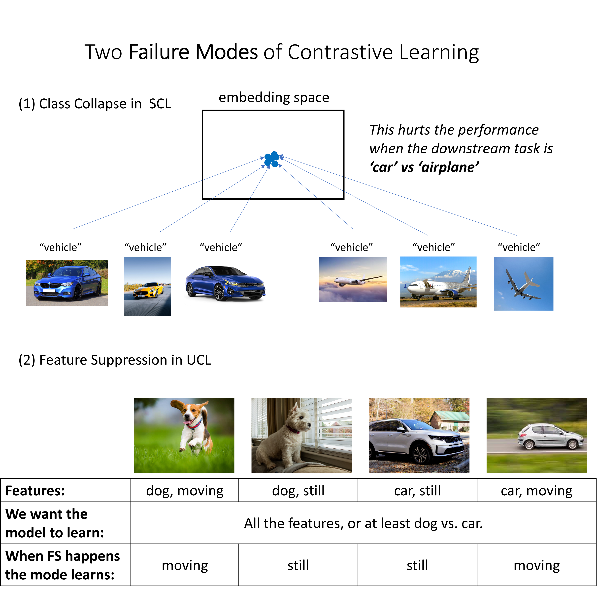
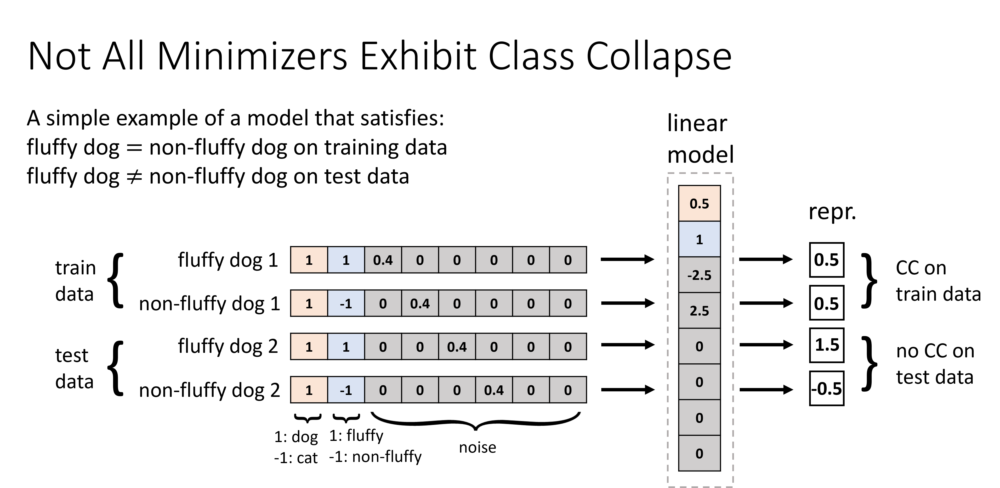
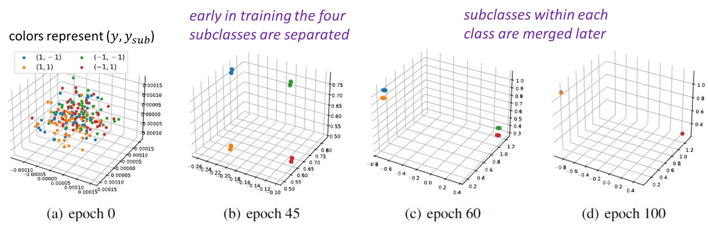

Contrastive learning (CL) has emerged as a powerful technique for representation learning, with or without label supervision. However, supervised CL is prone to collapsing representations of subclasses within a class by not capturing all their features, and unsupervised CL may suppress harder class-relevant features by focusing on learning easy class-irrelevant features; both significantly compromise representation quality. Yet, there is no theoretical understanding of class collapse or feature suppression at test time. We provide the first unified theoretically rigorous framework to determine which features are learnt by CL. Our analysis indicate that, perhaps surprisingly, bias of (stochastic) gradient descent towards finding simpler solutions is a key factor in collapsing subclass representations and suppressing harder class-relevant features. Moreover, we present increasing embedding dimensionality and improving the quality of data augmentations as two theoretically motivated solutions to feature suppression. We also provide the first theoretical explanation for why, when supervised and unsupervised CL are employed together, higher-quality representations are obtained, even using commonly-used stochastic gradient methods.
1. Not all minimizers of the SCL loss exhibit CC, but the minimum norm minimizer does. The key insight is that due to high dimensionality of the model, it has the capacity to minimize the training loss in various ways. While minimizing the training loss implies CC on the training data, it does not necessarily imply CC on the test data. The first figure provides a simplified example illustrating a model that exhibits CC on the training data but not on the test data. This occurs because the model can exploit the specific input noise present in the training data to counteract the subclass information in the embeddings, while this input noise is rarely encountered in the overall distribution due to high dimensionality. The second figure illustrates that the minimum norm minimizer does not align with the subclass feature at all.
2. In SCL, subclasses are learned by (S)GD early in training but unlearned later. The first part is supported by both theoretical and empirical results and the second part is supported by empirical results. The theoretical characterization of the unlearning process remains an important direction for future research. This observation, in conjunction with the previous point (1), prompts us to conjecture that the bias of (S)GD towards simpler solutions, such as the minimum norm solution, leads to the unlearning of subclasses and ultimately results in class collapse (CC).
3. In UCL, with the min norm inductive bias, we characeterize two scenarios where FS can happen. (a) When there are easy and irrelevant features present, and the embedding size is limited, the model is unable to accommodate all the information from the input space into the embeddings. As a result, it selectively captures only the easiest features, disregarding the harder class-relevant ones. This suggests increasing embedding size as a solution which we validated through experiments. (b) Even with arbitrarily large embedding sizes, FS can still occur in the presence of high-dimensional irrelevant features and the use of imperfect data augmentation that preserves those features. This emphasizes the importance of designing better data augmentation strategy.
4. We also theotretically justify using a weighted sum of SCL and UCL losses, showing that it can provably avoid both CC and FS. This result sheds light on the empirical observation of improved performance when joint loss is used.
Put bibtex citation here